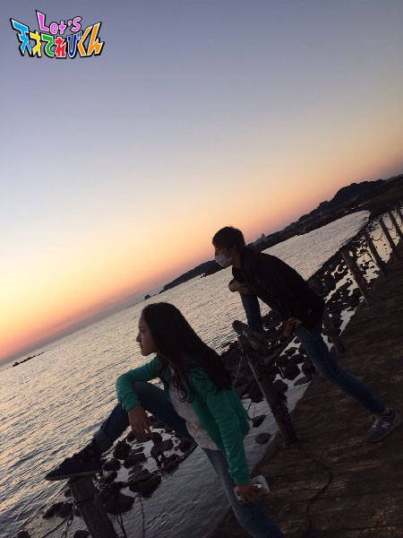
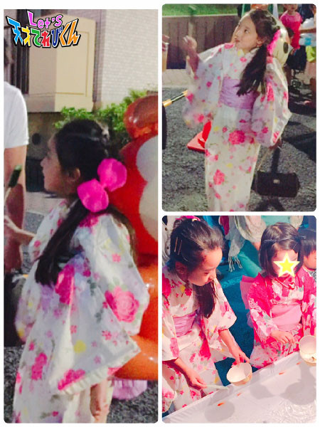
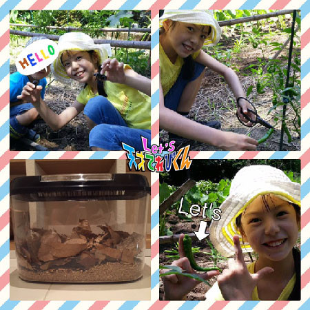

<<2016年7月 | トップページ | 2016年9月>>
2016年8月
感動の瞬間［瀧澤翼］
こんにちは！
夏休みも、もう終わりですね。
ちょっぴり寂しい気持ちの瀧澤翼です！
先日、家族で栃木県にあるテーマパークに行ってきました！
江戸の街並みを忠実に再現していて、
まるで昔にタイムスリップしたような気持ちになりました！
忍者のお芝居や手裏剣（ しゅりけん ）投げを体験したり、
昔の文化を実感して、とても楽しかったです！
ぜひ一度行ってみてください！
さぁ、今回のテーマは「 感動の瞬間 」ですね。
今年はオリンピックが盛り上がりましたね！
僕もいろんな試合をテレビで見ていて、
思わず声を出してしまうほど熱中しちゃいました笑
というわけで僕の感動の瞬間は、「 オリンピック 」です。
体操やカヌー、レスリングなどメダルをとった競技が多く、
とてもうれしかったです！
特に僕が１番感動した瞬間は、バドミントンの髙橋・松友ペアが
日本人初の金メダルをとった瞬間です！
16対19から土壇場（ どたんば ）に５点連続で得点したのは
本当に素晴らしいと思いました！
髙松ペアの諦めない気持ちに感動しました！
オリンピックは終わりましたが
まだパラリンピックがあるので頑張ってほしいです！
感動を期待してます！
Let's オリンピック！！！！
投稿者:瀧澤翼 | 投稿時間:18時45分 | カテゴリ：てれび戦士 | 固定リンク
感動の瞬間［久保みのり］
こんにちは♪( ´θ｀)ノ
みのりです！！
毎日毎日暑くてあせが止まらないけど (~_~;)
元気にしています！！
私はこの間、「 やな 」であゆをとりました。
あゆはぬるっぬるで、とろうとしても手からする～っとにげてしまい、
つかまえるのがとっても大変でした >_<
でも自分でつかまえたあゆを
しおやきにしてもらって食べたらとーーってもおいしいかったです ^ ^
それから、デザートにはブルーベリーがりに行きました！
いろいろなしゅるいの木から採って
４つぶくらい一気に食べるとあまくておいしいんだよ ^ ^
う～ん、ぜいたく～
ゆかたを着てお祭りにも行きました。
ゆかたは暑いし動きづらいけど、かわいいから大好きです ^ ^
＊.｡.:*・ﾟ ＊.｡.:*・ﾟ ＊.｡.:*・ﾟ ＊.｡.:*・ﾟ ＊.｡.:
今回のテーマは『 感動の瞬間 』
みなさん、リオオリンピックは見ていましたか？
わたしは夏休みだったので、
すこし夜ふかして日本の選手を応えんしていました (^-^)/
水泳、体そう、たっ球、バドミントン、、
どのしゅ目も日本の選手のがんばりに力が入ったけれど、
その中でも一番感動したのは、男子400メートルリレーです！
日本人選手の１人１人の走る速さは外国人選手にはかなわないけど、
バトンパスがとても上手だから銀メダルがとれたそうです。
バトンを受け取る人は、うしろから走ってくる人を信じて前をむいて思いっきり走ります。
速く走ることだけではなく、
おたがいをしんらいしていないとできないことだなぁ、と思いました。
私も２学期には運動会でリレーをします。全員が選手です。
私もクラスの仲間と心を１つにして、きずなを深めたいです ^ ^
次のオリンピックは東京！
私は中学２年生（ 今のタッキーの年 ）！！
想像つかないなぁ～笑
投稿者:久保みのり | 投稿時間:18時45分 | カテゴリ：てれび戦士 | 固定リンク
感動の瞬間［飯島緋梨］
こんにちは！
飯島緋梨です ^o^
夏休みが終わっちゃう～
お祭りに花火大会、遊園地に映画にお買いもの！
あ～あっという間の夏休みだったな～
皆さんは夏休みの宿題終わりましたか？！
私、慌ててます！
夏休み短いよ～ (~_~;)
宿題してると眠くなっちゃう 笑
まっ、どうにかなるか！
（ ※どうにかなりません。笑 ）
さてさて、今回のお題は
「 感動の瞬間 」です！！
皆さんには感動の瞬間はありますか？
私の感動の瞬間は、和歌山県の海で見た夕陽です！
こんなにもきれいな夕陽は初めて見ました！
オレンジと黄色、白に青の色が目に残る
一生忘れられない景色です！
ずっと見ていたかったけど
あっという間に夕陽が沈んで夜がやってきます
海に沈む太陽！
私はなんともいえないこの瞬間に感動しました！
皆さんにも、この景色を実際に見せてあげたいなー！

こんな景色もう見られないかもしれない！
と思って、かっこつけた写真撮ってもらいました！笑
皆さんの感動の瞬間はなんですか？
Let's 感動の瞬間！
投稿者:飯島緋梨 | 投稿時間:18時45分 | カテゴリ：てれび戦士 | 固定リンク
感動の瞬間［黒川桃花］
こんにちは。黒川桃花です。
あー夏が終わって秋がやってきますね！
今年の夏は、プールに海にBBQ、夏らしいことがいっぱいできました！
海でスタンドアップパドルボードというのを初めてやってみました。
サーフィンの板みたいなものに乗って、パドルでこいで進むものなのですが、
思っていたよりバランスをとるのが難しくて
足の届かない深さのところで落っこちたときはドキドキしました。
２、３人一緒に乗れるのですが、犬を乗せている人がいてびっくりしました！
ひろーい海の上をこいでいると、とっても気分爽快です！
また来年もやりたいな！
夏の目標「 英語の曲を歌う！ 」は、、
まだまだ発音は完ぺきではないのですが、
一応１曲だけ歌えるようになりました。
もっともっと頑張らなきゃ (^^♪
さて、今回のテーマは「 感動の瞬間 」です。
最近感動したことは、ずばり！オリンピックです！！
やっぱりライブで観戦したくて、
結構夜ふかしして観戦していました。
毎日寝不足でした。。 (@_@)
なかでも一番感動したのが、
「 男子400メートルリレー 」です！！！！！
個人ではファイナリストが１人もいないなかで、
銀メダルなんてすごすぎます！！！
チームワークで勝ちとったメダル！！
選手のみなさんのすがすがしい笑顔！！感動しました！！！！
私も、てれび戦士と茶の間戦士とのチームワークを大切に
これからも頑張ります！
投稿者:黒川桃花 | 投稿時間:18時45分 | カテゴリ：てれび戦士 | 固定リンク
私の大発見！［皆川寧々］
みっなさ～ん、
こんばんは、＊寧々＊です (｡・u・｡)/☆
今回のお題は「 私の大発見！ 」です。
いつもは家と学校の往復や、
体育館でバスケなど、
室内にいることが多いので
気づかなかったのですが。。。。
夏休みに入り、外出することが増えて、
「 暑いな～太陽・・・まぶしすぎでしょ ( ´д｀ll)」
って空見上げて気づいちゃいました。。。
「 うわぁーーーー！？
空めっちゃきれいじゃん！！ \(●'Д'●)/ 」
ゆっくり動く雲や、
モクモクふくれあがった雲、
あっ！！コレ ↓↓↓
寧々的には、左がハートで、
右が犬に見えるんですが・・・
みなさんには何に見えますか？
雲っていろんな形をしていて、
見ていてあきないですよね。
いやしですよね (｡・?・｡)
夏は、夕焼け空もきれいですね！
↓↓↓
雨上がりには虹が見れたり、
グラデーションの空が見れたり、
みなさんもぜひ夏空を見上げて
観察してみてください！
最後は妹と変顔あそびをしてるとこです笑
Let's 夏空観察～
それでは＊寧々＊でした～
投稿者:皆川寧々 | 投稿時間:18時54分 | カテゴリ：てれび戦士 | 固定リンク
私の大発見！［原田明莉］
こーんにっちわ！
明莉です！
ほんっっっとに暑いですねぇ～
こんな炎天下の中での部活は春よりも全然
結構体力を奪われるようになりました！汗汗
500mlのスポーツドリンクを２本持っていっても
絶対に足りなくなります！！！
これからもっと暑くなるだろーけどがんばるぞ！！！
それでは本題に入ります
今回のテーマは
「私の大発見！」
です！
私、最近大発見をしました！！！
それは
弟が学校で育てていたのを夏休みに入り
家に持って帰ってきて育てている
ピーマンについてです！
そのピーマンまだ小さいね
と言って収穫をしていなかったのです！
そ、そしたらなんと！
緑色だったピーマンが赤色になったんです！
ぱ、パプリカ！？（ ピーマンです ）
になったのかなーー？？
さらにおばあちゃんの豆知識で
ピーマンが赤くなって熟すと甘くなるらしいですよ！！！
ピーマンは苦いからという理由で苦手な人も多いんじゃないかな～
ぜひピーマンを熟してチャレンジしてみては！？
私もやってみよーーー！
早く食べたいな ^_^
というか、、
もともとはピーマンは赤く甘くなってから食べるんだとか・・・・・・
こんな１つの小さな発見からいろいろなことが知れちゃいました！！！
なんかちょっとうれし～
発見って意外と身近で、自分が気づいてなかったこともあるかもしれません！
１つの考えかただけでなく
視野を広げれば広げるだけ
たくさんの大発見ができるんじゃないかなー
って思います！
発見って面白い！
！！！Let's discovery！！！
投稿者:原田明莉 | 投稿時間:18時45分 | カテゴリ：てれび戦士 | 固定リンク
私の大発見！［稲垣芽生］
こんにちは～
夏を楽しんでいます！
お祭りに行って、わたあめ、かき氷をちょっと妹にもらったり、
きゅうり、唐揚げも食べました！
そして・・・くじ引きをしたら・・・
な、な、なんと～！
１等～！！ うれしかったぁ～
くまさんの
大きいから腕ではなく腰につける人形

また行きたい！
この夏もいろんなお祭りに連れていってもらいます。
では本題です。
「 私の大発見！ 」
私はよく、大発見をしますが・・・
ノートに書いたりしていなくて、思い出せず・・・”(-“”-)”
悔しい・・・
なので、最近知って、みんなに伝えたいと思ったこと！！
今年のめいぼ～の目標は、無駄づかいをしない！なのですが
それにぴったりな、
野菜の捨てちゃう部分を利用して
なんと！しおりが作れちゃうこと！
作り方は、白菜の捨てちゃう部分をすりおろす。
次に、水分をとって好きな形にします。
日光が当たるところに１週間置く。
そしたら完成！です。
これは日光に当てている途中・・・
いろんな色に染めたらまた楽しそう！
投稿者:稲垣芽生 | 投稿時間:18時45分 | カテゴリ：てれび戦士 | 固定リンク
私の大発見！［小澤竜心］
こんにちは！竜心です。
今年の夏休みは、料理に挑戦してみました♪
ウインナーを切って、焼いて、
卵をといて流しこんで、塩、こしょう。
焼いたウインナーと一緒に、ひっくり返します。
まわりに野菜をトッピングして・・・
『 ウインナーオムレツ 』の完成！！！
見た目は、かっこよくならなかったけど、
味は、バッチリおいしかったです(*´∀｀)
料理のほかには、
公園で、汗だくで野球をしたり・・・。

なかなか遠くには遊びに行けないけど、
いろいろと、楽しんでいます o(^o^)o
では、『 私の大発見！ 』のお話です。
ぼくは、歴史やお城が大好きです。
自由研究で、歴史について調べていたら・・・
なんと、神奈川県に、
『 小沢城 』というお城を見つけました！
平安時代の頃に建てられたといわれるお城で、
合戦の場にもなったみたいです。
ぼくと同じ名前のお城があったなんて、
なんだかうれしい～♪
いつか、小沢城の跡地に行って、
その時代の空気を感じてみたいです。
侍（ さむらい ）になった気持ちに、なれるかもしれません。
『 小沢城があった！ 』
これが、ぼくの大発見です ((o(^∇^)o))
投稿者:小澤竜心 | 投稿時間:18時45分 | カテゴリ：てれび戦士 | 固定リンク
私の大発見！［胡内奏芽］
今回のテーマは
『 私の大発見！ 』！！！！
ぼくはよく
『 おっちょこちょいだ 』
と言われます。
でも、大発見したんです！！
そう！
おっちょこちょいなのは、ぼくだけじゃなかったんです！
たぶん、ほとんどの人、みんな
おっちょこちょいだったんです！！
それはですね・・・
ぼくはカキ氷が大好物！！！
夏休みで暑い中
お風呂あがりのカキ氷が最高です！
寝る時間は決まっています。
カキ氷を食べるために、早くお風呂に入って
必ずカキ氷を食べる！
そのくらい大好き！
そして知ったんです！
カキ氷を食べるとキーーンとなるあの頭痛。
その理由はいくつか説があるらしいんだけど
急に冷たいものを口に入れることで、
舌がびっくりして【 冷たさ 】を【 痛さ 】とまちがえる、っていう
説があるんだって！
なんで頭が痛いって？
舌が感じた
『 苦い 』とか
『 甘い 』とか。
これを信号で頭に伝えて、初めて頭で
『 苦い 』とか
『 甘い 』とかわかるんだって。
だから、かん違いした頭が痛くなるんだって！
痛くないのに痛いとかん違いしちゃうらしいんです！
おっちょこちょいですよね！？
だいたいみんな
キーーンって痛いですよね！？
ほら！
人って、実はみんなおっちょこちょいなんですね （ 笑 ）
ぼくはおっちょこちょいだと言われますが、
みんな同じジャン♪ (*^^*)
と安心した発見でした！
みなさん知ってました？？？
それでは、
今日も、フルーツのせカキ氷をいただきます (*^^*)
投稿者:胡内奏芽 | 投稿時間:18時45分 | カテゴリ：てれび戦士 | 固定リンク
私の大発見！［飯島緋梨］
こんにちは ^o^
飯島緋梨です！
夏といえばアイスがおいしい季節！
緋梨はソフトクリームのバニラが大好き (^o^)
暑～い夏に食べるとやっぱり格別です！

さてさて、今回のお題は
「 私の大発見！ 」
緋梨の大発見は・・・
【 虹 】です！
今年の夏休みも自由研究の宿題が出ました！
緋梨は工作が好きなので
中学生になって初の自由研究は工作をしよう思っていました！
・・・がなんと、しかし
自由研究は、気になることを調べてレポートにまとめてくる！でした （泣）
いつもレポートには苦戦しています。
どうしよー！
そして忘れかけた頃・・・
ある日、急に雨が降ってきて、その後とてもきれいな虹が！
あっ！そうだ！
自由研究のことを思い出し、調べてみました！！
虹は必ず太陽を背にした方向に現れて
虹の外から内側にかけて、赤、だいだい、黄、緑、青、むらさき色なんだって (^^)
そして虹をよーく見てみて気づいたのですが
なんと濃い色のした虹の上にうっすらと見える虹があるのが分かりますか？
ここで【大発見！】
実はこれ、
福虹（ ふくこう・ふくにじ ）というそうで・・・
なんとこれ！
濃い色をした虹の色の順番と真逆の色になっているんです！
こうして調べてみると
知らなかったことや驚くこと、大発見がたくさんあるのですね！
皆さんも気になったことは調べてみてね♪
Let's 大発見！
投稿者:飯島緋梨 | 投稿時間:18時45分 | カテゴリ：てれび戦士 | 固定リンク
私の大発見！［黒川桃花］
こんにちは！元気いっぱい黒川桃花です！
毎日あついですね！
私は夏大好きなので、ずーっと夏のままならいいなぁと思ってしまいます。
夏の終わりに少し涼しくなってくると、
とってもさびしい切ない気持ちになってしまいます。
さて、
今回のお題は、「 私の大発見！ 」です！
私の大発見は、、
ジャジャン！！！、
「 ひじから手首にかけての長さと、足の裏の長さが同じ 」
ということです！
みなさん知っていましたか？？
半信半疑で、足の裏の長さとひじから手首にかけての長さを比べてみたら、同じでした！
これは私にかぎってなのかもしれない！
と思って、妹やママの長さも計ってみたところ、
なんと２人ともやっぱり同じでした！
なんで同じなのかはよくわからないけれど、
体ってふしぎだな～と思いました！
（ ちなみに私の足のサイズは25センチなんです。
女の子にしては少しだけ大きいと言われます。
かわいい靴を探すのも大変ですが、
腕が長いとダンスを踊っていて見栄えがいいと言われたことがあるので、
まあいいかな (^.^) ）
では！ (*^_^*)
投稿者:黒川桃花 | 投稿時間:18時45分 | カテゴリ：てれび戦士 | 固定リンク
私の大発見！［林武尊］
こんにちは、林武尊です。
この前、てれび戦士の仲間・辻村くん、赤崎さんとご飯を食べに行きました！
久しぶりに会っていろんな話をしました。
指スマで遊んだり、とっても楽しい時間であっという間でした。
また会いたいな～
今回のお題は「 私の大発見！ 」
僕が見つけた発見は、
コンビニの袋の色が、買う商品によって違うということです！
みなさん、気付いてましたか？
飲み物やお菓子の袋は白で、
お弁当など温めることができるものは茶色い袋に入れているんです！！
理由を調べてみたところ、
茶色の袋はそこが広く、白い袋より厚めでサラサラしていて、
温かい食べものに適しているそうです。
ビニールにいろいろな工夫がされていてびっくりしました。
ではまた～
投稿者:林武尊 | 投稿時間:18時45分 | カテゴリ：てれび戦士 | 固定リンク
私の大発見！［辻晴仁］
おはこんばんちは
つじはるとです (^^♪
大事件が起きました！！
この写真、小学４年生にもなるぼくが、
なぜお父さんにおんぶされていると思いますか
↓
じつは・・・
な、なんと、
ドッジボールくらいの大きさのウニのとげが、
足に刺さってしまい、歩けなくなっているのですーーー (>_<)
そのとき、ぼくとお父さんは、
岩にはりついためずらしい貝を見つけて
むちゅうになっていました。
そして、岩のかげに10匹くらいいた
大きなウニ（ ガンガゼ ）に気をつけるのを、
うっかり忘れてしまっていました。
ほんのちょっと、
ポンッと足が当たっただけなんですよ！
なのに、当たった３秒後、
ギュイギュイーーーとものすごいいたみがおそってきて、
ぼくは、ぎゃあーーっとさけんでしまいました！
おばあちゃんが、
「 ガンガゼのとげにはどくのあるとよ～～ 」
と心配そうに言いました。
どくのせいでいたくなるらしいです。
おばあちゃんは、口でどくをすい出してくれました。
足のうらを見ると、
黒い小さな点が８こあるだけだったけど、
よーく見ると、くすりゆびのつめのところに、
２センチくらいのとげがささっているのが
すけて見えました。
つまり、８この点々のおくに、
ほそーいどくのついたとげが
ぶすーと深くささっているみたいなのです。
急いで海の近くのびょういんに走って行って
かんごしさん２人とお母さんに足や体をおさえつけられながら、
ううぅーーーとうなりながら、
おいしゃさんにとげをぬいてもらいました。
それはもう、、あくむでした ((+_+))
今回の「 私の大発見！ 」
（１）海にはドッジボールサイズのウニ（ ガンガゼ ）がそんざいする、ということ。
（２）ガンガゼのとげは細くてとてもささりやすいけど、
当たったしゅんかんはぜんぜんいたくない！ということ。
（３）きけん生物の図かんによると、どくレベルが２！
（ ちなみにマムシもレベル２になっていたぞ？！ほんと？！ ）ということ。
（４）じつは食べるとおいしいらしい！ということ。
海ってとても楽しいけど、きけんもあるから、
ほんとうに気をつけなくてはいけないですね。
実感しました (~_~;)
みんなも海では気をつけて楽しんでね！
では、またね (^^)/
投稿者:辻晴仁 | 投稿時間:18時45分 | カテゴリ：てれび戦士 | 固定リンク
私の大発見！［桐畑カレン］
こんにちは。
カレンです (*^^*)
今年も行ってきました。
霞ヶ関子ども見学デー (^^)/

わくわく o(*ﾟ∀ﾟ*)o
今年行ったのは去年まわれなかったところです。
そこで興味をひかれたのが財務省のこれ！
『 １億円の重さ 』
１億円 (°Д°)
０が何個？
100000000
８個もつくー (○_○)
チャリチャリチャリーン。
あ、でもお札だからパサパサパサかなー。
などと考えながら、１億円を持ってみました。
紙だからあまり重くないのかな？
と思いながら持ってみたら、
ズーン w(゜o゜)w
重い・・・重すぎる・・・でもがんばる！
フンガー (‘＊‘)
力を入れて持ってみたら、持てました(^-^)v
だいたい１億円の重さは10キロだそうです。
２リットルのペットボトル５本分ですね。
☆ １億円の重さ大発見 ☆
続きまして、もう１つ。
夏休みに旅行したときにみつけた大発見をご紹介。
飛行機が離陸してどんどん空に向かって飛んでいくときに、
『 耳がポワーン 』
てなりませんか？
この耳ポワーン現象、苦手です (. .)
なぜかこのとき、
本当にたまたま、
音楽を聞こうと思ってだしてあったイヤホンを、
離陸する前に耳にすっぽりはめてみたんです。( イヤホンは無音で )
そしたら、耳ポワーン現象にならなかったんです！
帰りも試してみました。
やっぱり、耳ポワーン現象にならなかったんです！
えー！？すごい！！
なぜか分からないけどすごい！！
☆ 耳ポワーン現象がおこりそうな予感があるときは、耳にイヤホン大発見 ☆
ぜひお試しください(*^▽^)/★*☆

投稿者:桐畑カレン | 投稿時間:18時45分 | カテゴリ：てれび戦士 | 固定リンク
私の大発見！［久保みのり］
こんにちは♪ ( ´θ｀)ノ
みのりです！
長～～い夏休み♪
７月の間はお休みはまだまだ続く～ってウキウキなのに、
８月になるとビューンってあっという間にすぎちゃって、
夏休み終りょ～ってなっちゃうの、、私だけかな (^_^;)
みなさんはそう思いませんか？
夏休みにしたいことリストの１つ、カブトムシをつかまえました～！
オスを２匹です。
今はおうちで大切に育てています ^ ^

あとね、たーくさんのピーマンやトマトやナスをしゅうかくしました。
その中にレッツの形になってるピーマンを見つけたの！
思わずポーズしちゃったよ ☆
＊.｡.:*・ﾟ ＊.｡.:*・ﾟ ＊.｡.:*・ﾟ ＊.｡.:*・ﾟ ＊.｡.:
さてさて今回のテーマは、「 私の大発見！ 」
少し前に、友だちをむかえに空港に行きました。
空港の屋上から飛行機が見えてワクワクでした (^o^)v
５分おきくらいに飛んだり着いたり、たーくさん飛行機が見えたよ！
日本の飛行機や外国の飛行機、カラフルなのがいっぱい見られて楽しかったです ^ ^
すごい音で飛んでいくのを見ていると、大きな飛行機がふわっと飛ぶのがとっても不思議。
さっそく家で紙飛行機を作って実験しました。
そして！大発見！！！
と思ったけど、紙飛行機はペラペラで軽いもんなーー。全然ちがうか (^o^;)
なんであんな大きな飛行機が飛べるのかのひみつは、
羽根の大きさと、形にありそうだけど、夏休みの間に調べてみようかな？！
私も飛行機に乗ってどこか遠くにふわっと飛んで行きたいな～～ (*≧∀≦*)
投稿者:久保みのり | 投稿時間:18時54分 | カテゴリ：てれび戦士 | 固定リンク
私の大発見！［瀧澤翼］
こんにちは！
夏休みに入って宿題三昧。
でも夏休みはenjoy（ エンジョイ ）したい瀧澤翼です！

この前、岡山県にあるNHK岡山放送局で
「 どんドン！進化の夏まつり♪ 」というイベントが行われました！
大勢の人が来てくれてとてもうれしかったし、
茶の間戦士といっぱい写真が撮れて、すごく楽しかったです！
今回は写真を撮れなかった茶の間戦士も、次の機会があったら参加してください！
さぁ、今回のテーマは「 私の大発見！ 」ですね。
僕が岡山県でご飯を食べに行ったときに
すごくおいしくてたまらない食べものがありました！
それはこちら！
岡山名物 『 ママカリの酢漬け 』です！！
これが僕の大発見です (^_^)v
ママカリはサッパという魚のことで、
「 ママ（ ご飯 ）をカリ（ 借り ）に行くほどおいしい 」ということから
ママカリと呼ばれるようになったそうです。
酢漬けにすることでとてもサッパリした味で、とてもおいしかったです！！
ぜひ岡山県に行ったら食べてみてください～！！
それではまた！
Let's ママカリ！！
投稿者:瀧澤翼 | 投稿時間:18時45分 | カテゴリ：てれび戦士 | 固定リンク
私の大発見！［柿澤仁誠］
こんにちはニマです (＾○＾)
夏休み楽しいですね！！！
今回のテーマは「 私の大発見！ 」
発見できたことがなかなかなくて、
何を書こうかなと考えながらすごしてました。
そんなある日、
なんと空ににじが出ていました！！！！！！！
いそいで外に出て、写真をとろうとじゅんびしていると、
にじがどんどんうすくなって、
ぼくがレッツポーズをしようとしてるときには、
にじは消えてしまいました （TOT)
ざんねん (>o<)
とった写真をみると、最初にとった写真になんとかうすく写ってました。
よかった (^^)v
にじを自分で見つけたのは初めてだったのでうれしかったです（＾▽＾)
何かいいことがあるといいな ★
あともう１つの発見で、
うちゅうのけんきゅうをするところでもらった、
ぼくが生まれた日の太陽の写真です！
とくべつなカメラでとった写真には、
太陽は毎日ちがうじょうたいに写るらしいです。
うちゅうのことをもっともっと調べたいと思いました！
それでは (＾o＾)/" また！
投稿者:柿澤仁誠 | 投稿時間:18時45分 | カテゴリ：てれび戦士 | 固定リンク
夏が来た！［稲垣芽生］
こんにちは～
最近ピアノの発表会がありました。
弾いた曲は映画『 魔女の宅急便 』の「 元気になれそう 」です。
でも、間違えてしまいました・・・
完ぺきに弾きたかった・・・
今年は間違えてしまったけれど
来年はがんばるぞー
今回のテーマ「 夏が来た！ 」
夏といえば、今、最初に思いついたのは野菜です。
お母さんが畑にはまっていて
いつも夏野菜の話をしているからです。
毎日、水をあげてたくさんの野菜を収穫しています。
ハートの形のミニトマト、ピーマン、なす
他にもスイカやゴボウ、おくら・・・
やっぱり、採れたては一層おいしいっっ！
ちょっとお手伝い・・・(^^♪
ピーマンの肉詰めも大好物になったよ。
もう１つの「 夏が来た！ 」
我が家は夏といえばBBQです！
家の近くでもするし、車でよく行く川があります。
もう、夏してきました ( *´艸｀)
川の近くでのBBQ最高です！
トマトベーコンの串焼きおいしかった～！
夏ははじまったばかり。また行くよぉ～！
夏だ～。夏が来た～！！！！！！！
投稿者:稲垣芽生 | 投稿時間:18時45分 | カテゴリ：てれび戦士 | 固定リンク
夏が来た！［林武尊］
こんにちは、林武尊です。
この前、おばあちゃんの家に帰りました。
お庭に水をやったり、温泉へ行ったりして楽しみました。
では本題へ。
今回は“ 夏が来た！”です。
もう夏ですね～
家の中も暑いので、せんぷう機を回して
アイスを２～３本食べて過ごしています （汗）
そこで、僕の今年の夏にやってみたいこと！
僕はアイスが大好きです。
で！
今年の夏は、アイスにまつわる
いろいろなことに挑戦したいと思っています！
まずは、アイスを種類別に分けて、
それを１つにして食べることです。
たとえば・・・・・
チョコ味やミルク味など、
甘い系はお皿に入れて溶かして、また凍らせて食べる！
氷系は、そのままつぶして、かき氷みたいにして食べる！
他にも、“ アイスの食べ比べ ”や
“ 利きアイス ”をやってみたいです。
食べて種類を当てるだけでなく、匂いで当てるとか・・・
それから自分でもアイスを作ってみたい！
アイスを食べて、楽しんで、涼しくなって、もう最高（≧∇≦）
みなさんも、暑い夏をアイスを食べて乗り切ろう！
でも食べすぎには注意しましょう！
お腹痛くなるからね (~_~;)
投稿者:林武尊 | 投稿時間:18時45分 | カテゴリ：てれび戦士 | 固定リンク
夏が来た！［胡内奏芽］
こんにちは！
胡内です。
夏ですねー。
大好きな祭りにお友達と行って来ました！
今回のブログテーマは
「 夏が来た！ 」ですね (*^^*)
夏といえば、まずは夏休み！
夏休みは、やりたいこと、行きたいところがたくさんあります (*^^*)
毎年、幼なじみのみんなで遊園地行ったり、
お泊まりしたり、イベント行ったり、バーベキューしたり、
今年も予定してるから、本当に楽しみでしょ！！
あとは、おばあちゃん家に泊まりに行くのも楽しみでしょ！！
幼稚園からのお友達と、パン作りとか、お祭りとか、
映画をみに行くとか、本当に本当にいろいろと楽しみです！！！
でも、あっという間に終わる夏、、、、、。
だからこそ、毎年全力で遊びきる夏、、、、。
もちろんお勉強も、がんばらないとですね （汗）
あと、今年の夏はどうしても挑戦したいことがあります。
それは「 サーフィン 」！！！
理由はカッコいいから (^-^)v
ぼくは、昔、水が怖かったけど、一生けん命泳ぎを覚えて、
今年こそは、サーフィンに挑戦したいと思っています！！
プールと海では全く違うから、まだ恐怖心はあるけど、
やってみないと分からないし、やっぱり見ててカッコいいです (*^^*)
ボードとかウェットスーツとか
いろいろ揃えなきゃだから、お父さんに相談しなきゃですね。
もし、実現できたらまた、ブログで報告したいです！！
最後に、３年生のときに習ったローマ字を思い出しながら、
ブロックでローマ字で名前を作ってみました！
それでは。
暑い日が続くので、体調など気をつけてくださいね！！
投稿者:胡内奏芽 | 投稿時間:18時54分 | カテゴリ：てれび戦士 | 固定リンク
夏が来た！［小澤竜心］
こんにちは！竜心です。
この前、少林寺拳法の東京都大会がありました。
ぼくは、毎年この大会に出場して、
『 夏が来た～♪ 』って感じになります。
７年間一緒にがんばってきたお父さんと、
最後の親子演武でした。
そして今年も、『 １位 』になることができました！
道場の先生や先輩が教えてくださったので、
一所懸命がんばりました。
みなさんに、とても感謝しています。
夏休みには、ダンスの発表会があるので、
ほとんど毎日、踊っています。
とにかく、楽しい～♪ヽ(´▽｀)/
ダンスも先生や先輩にたくさん教わって、
みんなと一緒にがんばることができるので、
毎日、うれしいです！
発表会が終わったら・・・
秋の舞台に向かって、日本舞踊です (ノ´∀｀*)
ぼくの夏は、とにかく踊ります♪
そして、小学校最後の夏だから、
学校のプールも、ラジオ体操も、自由研究も、
がんばりますヽ(^○^)ノ
自由研究は、何しよっかな～？！
投稿者:小澤竜心 | 投稿時間:18時45分 | カテゴリ：てれび戦士 | 固定リンク
夏が来た！［黒川桃花］
みなさんこんにちは。
黒川桃花です。
夏ですね！！！！
夏は海にプールにお祭りに、楽しいことがいっぱいで大好きです！
↑ 右の写真は、先日、幼稚園の夕涼み会に
妹とお友達と行ってきたときのものです。
懐かしい先生にも会えてうれしかったです。
ヨーヨー釣りもして楽しかったです♪
左の写真はサーフィンの写真です♪
私は去年サーフィンデビューをしました。
まだサーフボードに立つことしかできないのですが、
今年はいろんなワザをきめてみたいなぁ～
さて、今回のお題は「 夏が来た！ 」です。
私には夏休み中の目標がひとつあります。
それは、
「 英語の曲を歌う！ 」です。
英語の歌詞の意味と発音を調べて
楽譜に書き込んで練習しています。
やっぱり難しいですね！
早くかっこよく歌えるようになりたいな。
↑ この人形は学校で
「 将来の夢 」というテーマで粘土で作ったものです。
憧れの『 オペラ座の怪人 』のクリスティーヌです (^.^)
♪♪アアアッアッアッアｯア～～♪♪
では、みなさんも楽しい夏を満喫してくださいね！！
投稿者:黒川桃花 | 投稿時間:18時45分 | カテゴリ：てれび戦士 | 固定リンク
夏が来た！［原田明莉］
hello ^ ^
明莉です！
いやぁ～
あっっっっっつく！！！！！！
なりましたねーーー！
がんばって！
どーにかして！
暑い夏をのりこえたーーーい！！
そんなところで本題に入りたいと思います！
今回のテーマは
「 夏が来た！ 」
です！
ちょうどいいので
どーやって夏をのりこえようか考えてみます！！！
んー。
あ！！！
よく学校のお弁当や部活の試合に
こんにゃくゼリーを持っていっています！！！
こんにゃくゼリーは普通のゼリーとちょっと違って
もちもちしてる食感が大好きなんです！
あとお腹にたまるんです！(￣▽￣)！
ゼリーを凍らせると、かき氷みたいで冷たくておいしい！
よくわからないけど
テンションものすごーーーく上がって元気がでるんです！！！
なので、今年の夏は
こんにゃくゼリーを凍らせて暑さをのりこえてみます！
それでは！
がんばるぞぉぉーーーー
Let's～～～～～～～！！！！！！
投稿者:原田明莉 | 投稿時間:18時45分 | カテゴリ：てれび戦士 | 固定リンク
ページの一番上へ▲